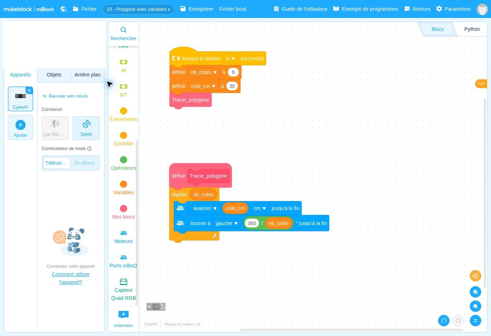

lorsque le bouton A ▾ est presséDépart
Ce que fait ce bloc : Bloc de départ : le programme se lance quand on appuie sur le bouton A du CyberPi, comme dans les fiches précédentes.
Pourquoi il est là : Vous choisissez le moment du départ.
Comment faire un seul programme qui dessine n’importe quel polygone ?
Un seul programme dessine un polygone dont vous choisissez le nombre de côtés et la longueur d’un côté. Vous changez deux nombres au début, et le robot s’adapte.
Un programme mBlock est un empilement de blocs, à lire de haut en bas. Chaque bloc a une couleur qui indique son rôle. Voici chaque bloc de cette fiche, dans l’ordre, expliqué simplement.
DépartContrôleAction du robotInformationÉcranMémoireCalcul
Les couleurs ci-dessous sont proches de celles de mBlock. Les blocs sont redessinés ici pour être lisibles ; la vraie capture d’écran est plus bas.
Ce que fait ce bloc : Bloc de départ : le programme se lance quand on appuie sur le bouton A du CyberPi, comme dans les fiches précédentes.
Pourquoi il est là : Vous choisissez le moment du départ.
Ce que fait ce bloc : Range 6 dans la variable nb_cotes (nombre de côtés).
Pourquoi il est là : On réunit en haut du programme le nombre qui change : pour dessiner un autre polygone, on ne modifie que cette ligne.
Mot à connaître. Une « variable » est une case de mémoire nommée qui contient un nombre.
Ce que fait ce bloc : Range 30 dans la variable cote_cm (longueur d’un côté en cm).
Pourquoi il est là : Même idée : un seul endroit pour changer la taille de la figure.
Ce que fait ce bloc : Lance le bloc personnalisé « Tracer_polygone », défini plus bas.
Pourquoi il est là : Au lieu de recopier de nombreux blocs, on les regroupe sous un nom clair. Le programme principal est alors très court et lisible.
Mot à connaître. Un « bloc personnalisé » est un bloc que vous créez vous-même pour regrouper plusieurs instructions sous un nom.
Ce que fait ce bloc : Début de la définition : tout ce qui est accroché dessous sera exécuté à chaque fois que « Tracer_polygone » est appelé.
Pourquoi il est là : C’est la « recette » du polygone, écrite une seule fois.
Ce que fait ce bloc : Répète autant de fois que le nombre de côtés.
Pourquoi il est là : Un polygone à n côtés = n fois (un côté + un virage). Comme le nombre est dans la variable, la boucle s’adapte.
Ce que fait ce bloc : Avance de la longueur contenue dans la variable cote_cm.
Pourquoi il est là : Dessine un côté de la taille choisie.
Ce que fait ce bloc : Tourne de 360 divisé par le nombre de côtés.
Pourquoi il est là : L’angle de virage est toujours 360° ÷ nombre de côtés (90° pour 4, 60° pour 6…). Le calcul se fait tout seul si on change nb_cotes.
Dans ce bloc, il y a :
C’est exactement ce que fait le programme, écrit avec des phrases. Les lignes décalées vers la droite sont à l’intérieur d’une répétition ou d’un choix.
Quand j’appuie sur A :
1. je range 6 dans nb_cotes et 30 dans cote_cm ;
2. j’exécute « Tracer_polygone ».
Définition de « Tracer_polygone » :
je répète nb_cotes fois :
1. j’avance de cote_cm centimètres ;
2. je tourne de 360 ÷ nb_cotes degrés.Retrouvez dans cette capture les blocs expliqués ci-dessus. Vous pouvez aussi ouvrir le fichier dans mBlock pour le tester et le modifier.

Autres solutions : voir la page Dépannage. Ces fiches n’ont pas été testées avec un robot réel : vos observations peuvent différer légèrement.
Pour être sûr d’avoir compris, changez un seul élément, prévoyez le résultat, puis vérifiez avec le robot.